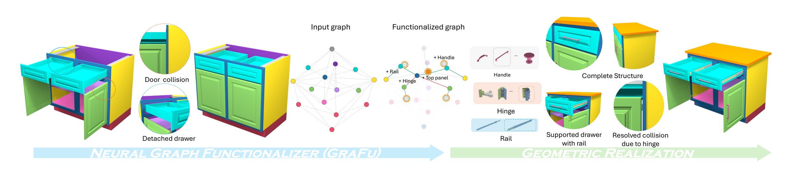
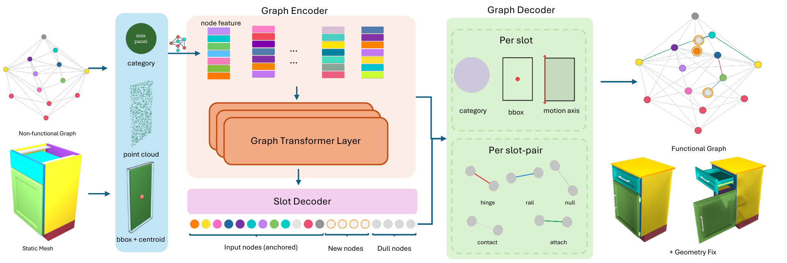
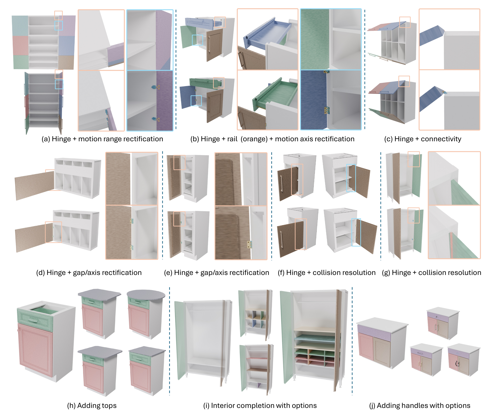
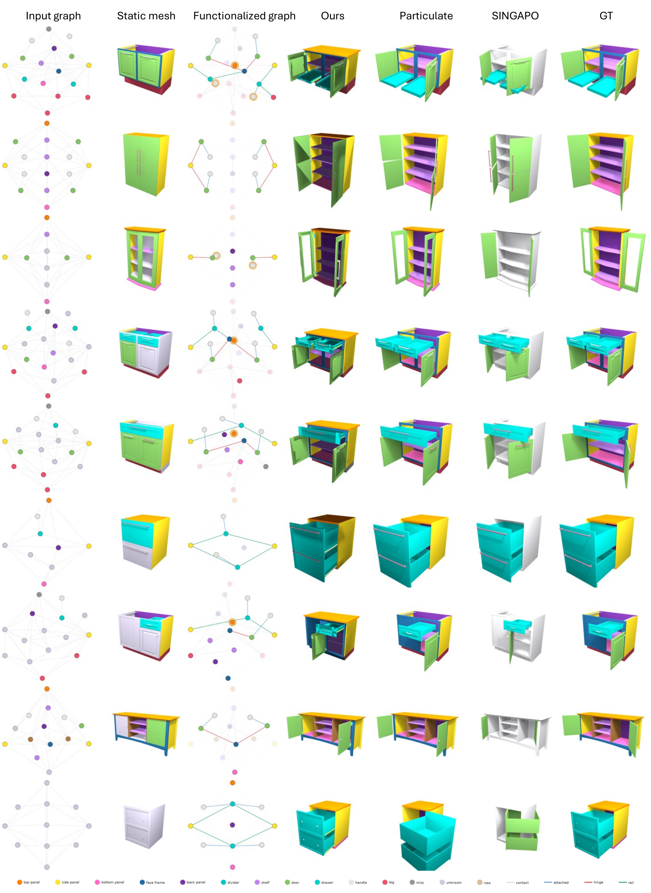

Functionalization via Structure Completion
and Motion Rectification
Simon Fraser University · ShanghaiTech University · Augmenta · Alberta Machine Intelligence Institute (Amii)
SIGGRAPH Asia 2026

Why functionalization?
Most 3D assets are made to be looked at, not used: doors without hinges, drawers without rails, missing tops and interiors, and human-annotated motions that collide or detach. We introduce functionalization, the task of transforming such models into functional, physically operable counterparts. Our key idea is to treat it as functional graph completion, where labeled part nodes and typed edges (contact, hinge, rail, attached) expose every structural deficiency as a missing node or edge, followed by geometric realization that grounds the predicted graph with real mechanical parts. Because part motion is driven by an installed hinge or rail rather than a virtual axis, erroneous motions are rectified at the same time.
Video
How it works

Results


Interactive functionalization demo
Three PartNet-Mobility cabinets, functionalized live in your browser. Pick a cabinet, customize what functionalization adds (top-panel shape, handle style, rail type, hinge type), then drag the slider or press play to operate it. Rotate with the mouse, zoom with the wheel.
BibTeX
@inproceedings{zhao2026functionalization,
title={Functionalization via Structure Completion and Motion Rectification},
author={Zhao, Mingrui and Perla, Sai Raj Kishore and Wang, Kai and Nag, Sauradip and Nguyen, Duc Anh and Peng, Jiayi and Wang, Ruiqi and Chang, Angel X and Savva, Manolis and Mahdavi-Amiri, Ali and others},
booktitle={Proc. SIGGRAPH Asia},
year={2026},
}